01 · ADHI VILLA
The Villa
A traditional Kerala-style stay tucked into the greenery of Sarvani, with its own quiet courtyard and a distinctly local character.
SARVANI · THIRUNELLI · WAYANAD
A quiet village stay in Sarvani, just outside Thirunelli — where traditional Kerala, forest air and slow days come together.
Adhi Villa is in Sarvani, a quiet rural village about two kilometres from the main Thirunelli area. It is close enough to reach the temple, river, trekking routes and forests easily — but far enough to feel removed from the busy side of the destination.
More privacy. More greenery. More village life. A slower way to experience northern Wayanad.
Come for a quiet weekend, a family break, a trek, or a few days of doing very little.
A traditional Kerala-style stay tucked into the greenery of Sarvani, with its own quiet courtyard and a distinctly local character.
A rustic elevated stay surrounded by trees, reached by its own little staircase through the greenery.
Sit outside, listen to the forest, read, talk, or simply let the afternoon pass without a plan.
Clean, practical rooms made for resting after trekking, exploring or a day spent around Thirunelli.
Adhi Villa works as a base for both slow village days and outdoor adventures.
Trek through the highland landscape of Brahmagiri. Trekking can be arranged as an additional experience during your stay.
Ask about the trek →Plan a wildlife day around Tholpetty and the northern Wayanad forest landscape. Safari arrangements can be discussed with us.
Plan a wildlife day →Walk through paddy fields, village paths and the quieter countryside around Sarvani and Thirunelli.
Explore forest edges, streams and rural river landscapes, or simply find a quiet place to sit and listen.
Food is part of the experience here. We can arrange Kerala-style meals, traditional breakfasts and simple local preparations around your stay.
Think rice, curries, coconut, seasonal vegetables and familiar flavours cooked in a homestyle way.
Meal options and menus can be discussed while planning your stay.
Ask about food →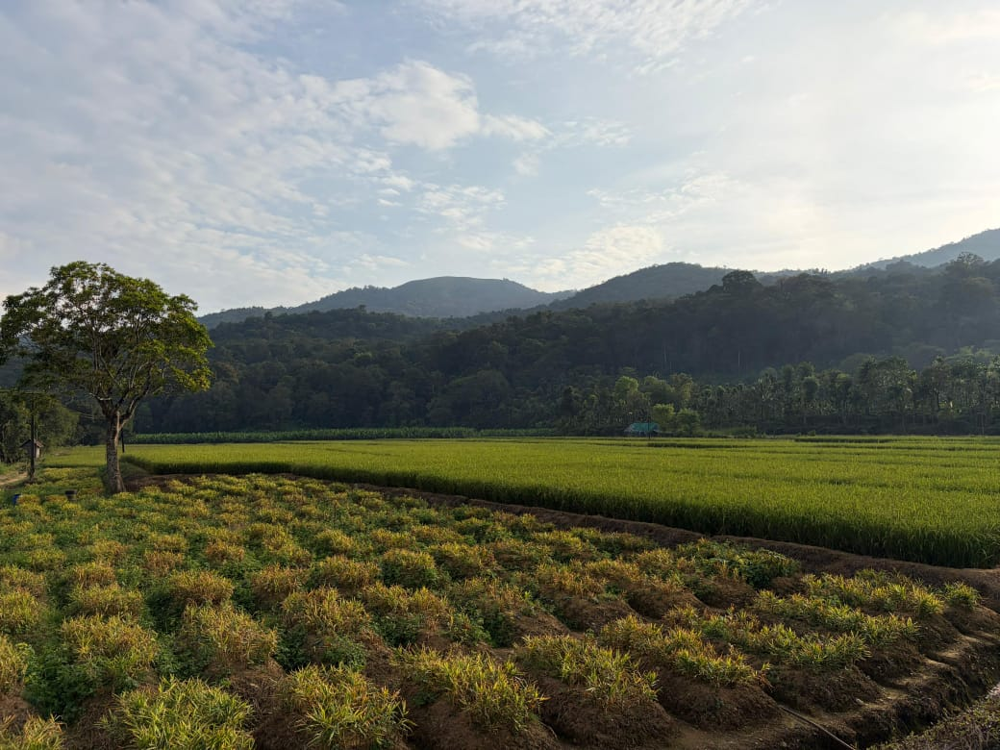
Stay in Sarvani and build your days around the places and experiences that interest you.
Temple, Papanasini, village life and the forest landscape around the sacred hills.
Highland trekking and wide mountain views for an active day out.
Wildlife safari and the forest country of northern Wayanad.
River islands and a green, easy-going day in the Wayanad landscape.
Cross into Karnataka for a change of scenery, including Iruppu Falls and the Kutta side.
For longer day trips, explore the forest and hill country across the border.
Thirunelli sits in a landscape where Kerala's forests and villages meet the routes towards Karnataka. From Adhi Villa, you can shape a day around wildlife, waterfalls, temples, villages or a scenic drive.
Ask us about planning an outing or a multi-stop day trip.
Plan an outing →Our quieter village base is just outside the main Thirunelli area, giving you easy access to the temple, forest, trekking routes and surrounding countryside.
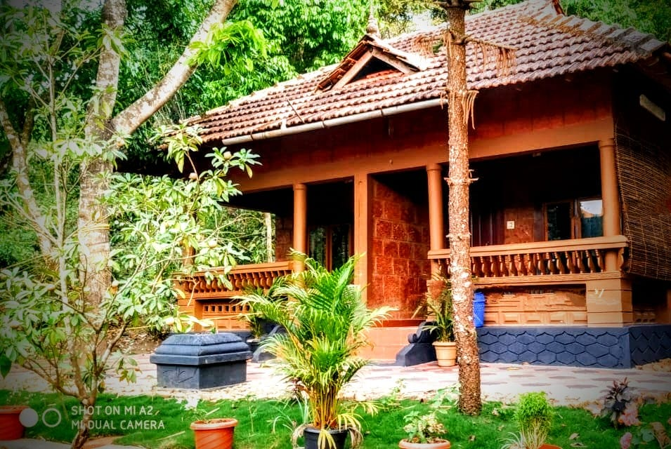
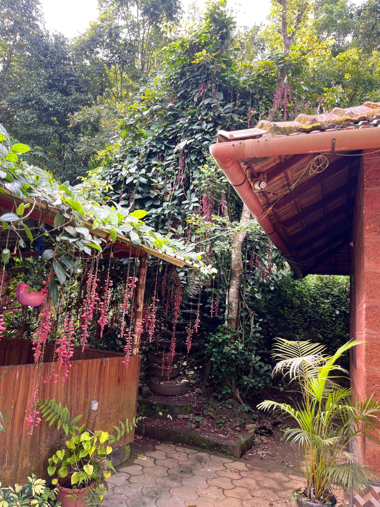
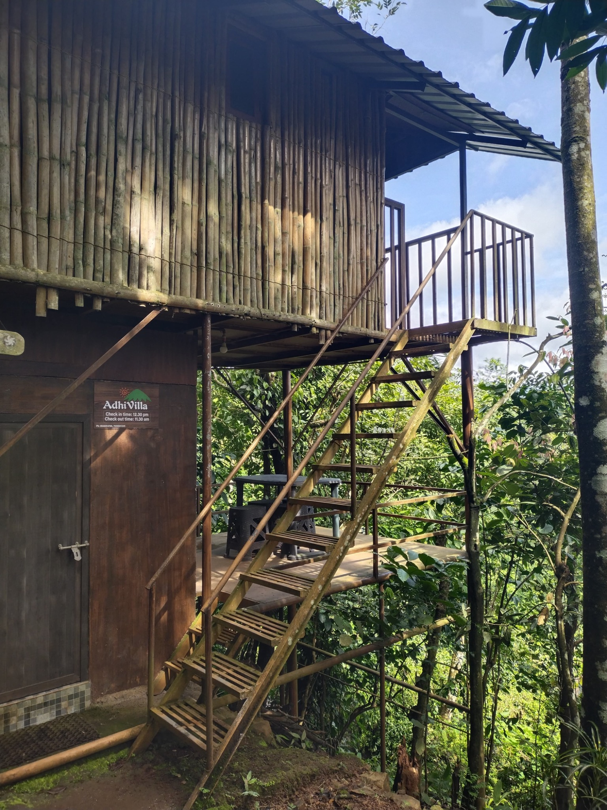
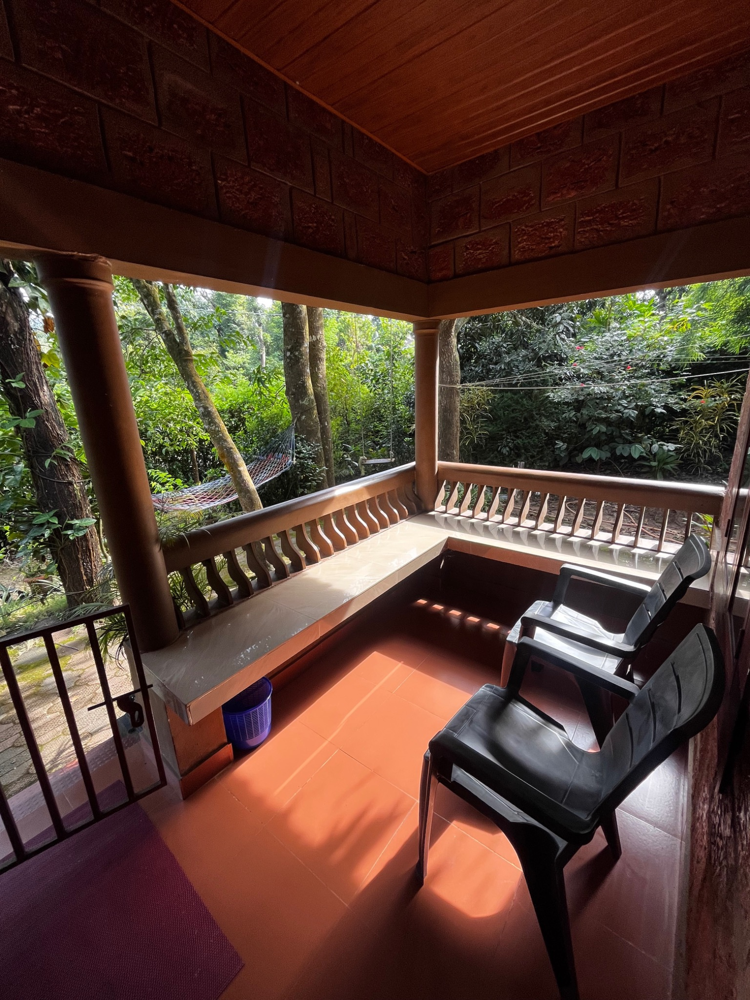
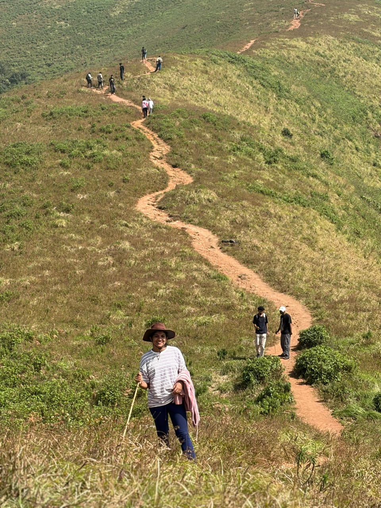
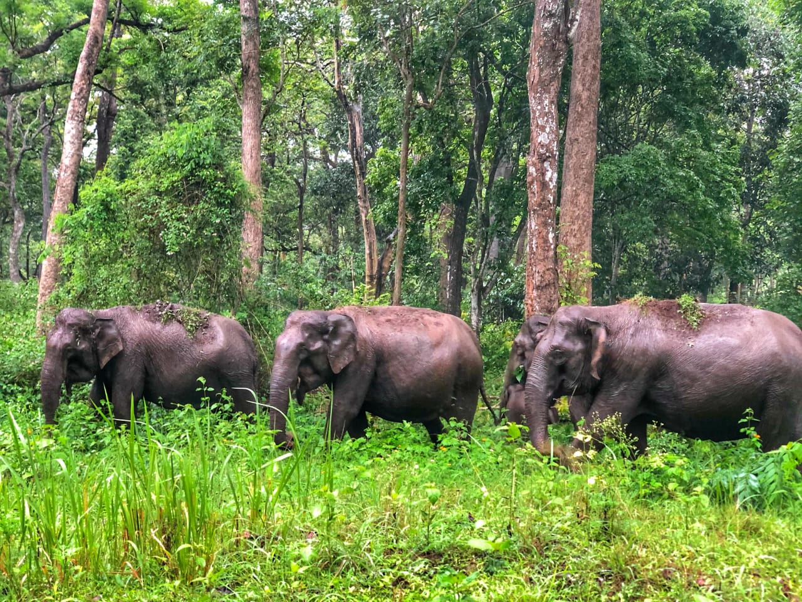
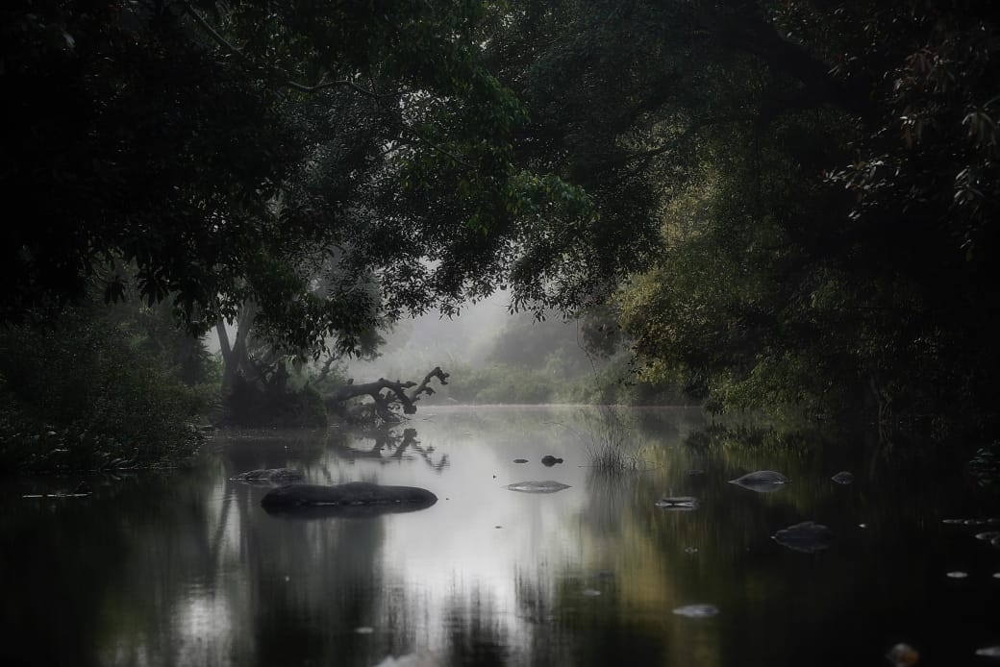
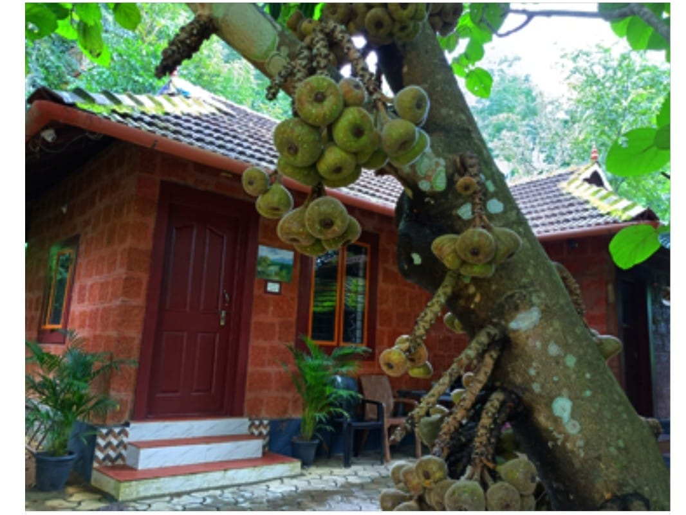
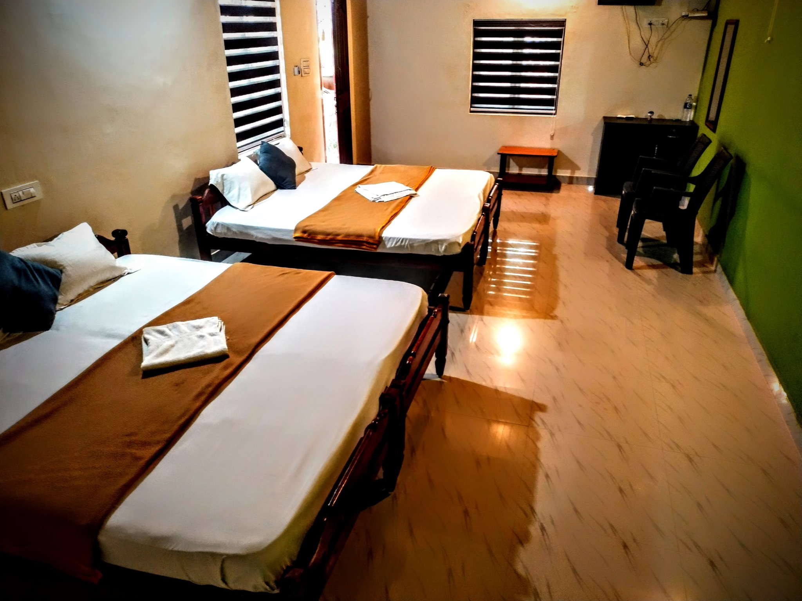
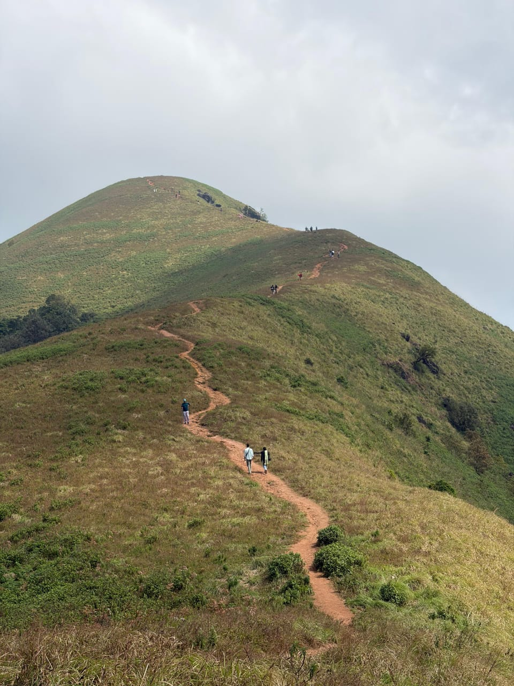
Tell us your dates, group size and what you'd like to experience. We'll help you plan the stay around the property and the places nearby.